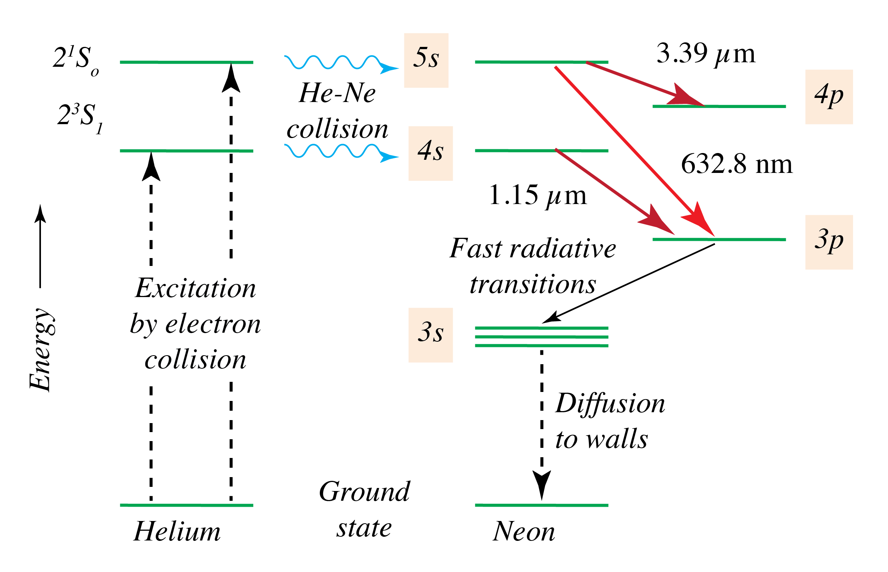

|
Célérité des ondes électromagnétiques dans le vide : \(c_0 = 3 {,} 00 \cdot 10^8 \text{ m} \cdot \text{s}^{- 1}\) ; constante de Planck : \(h = 6 {,} 63 \cdot 10^{- 34} \text{ J} \cdot \text{s}\) ; électronvolt : \(1 \text{ eV} = 1 {,} 6 \cdot 10^{- 19} \text{ J}\).
Calculer la période \(T\) d'une onde
électromagnétique de longueur d'onde dans le vide
\(\lambda = 200 \text{ nm}\).
Indiquer le domaine spectral
auquel appartient cette onde.
Le système Bluetooth utilise des ondes électromagnétiques de fréquence \(\nu = 2 {,} 4 \text{ GHz}\). Calculer la longueur d'onde dans le vide de ces ondes électromagnétiques.
Une télécommande classique pour téléviseur utilise un rayonnement électromagnétique de longueur d'onde dans le vide \(\lambda = 950 \text{ nm}\).
À quel domaine spectral appartient cette onde ?
Calculer la fréquence \(\nu\) de la source émettrice.
Un rayonnement monochromatique rouge possède une longueur d'onde dans le vide \(\lambda\) égale à \(\lambda = 650 \text{ nm}\). Calculer l'énergie \(E_r\), en joule, puis en électronvolt, du photon associé à ce rayonnement.
Un photon émis par une source lumineuse possède une énergie égale à \(E_r = 2 {,} 2 \text{ eV}\).
Exprimer cette énergie en joule.
En déduire la fréquence \(\nu\) et la longueur d'onde \(\lambda\) du rayonnement associé à ce photon.
Vérifier que ce rayonnement appartient bien au domaine des ondes lumineuses.
Une diode électroluminescente émet un faisceau
lumineux de puissance \(\mathcal{P}= 0 {,} 50 \text{ W}\). Chaque
photon est associé à une onde de longueur d'onde
\(\lambda = 700 \text{ nm}\).
Calculer le nombre \(N\) de
photons que la diode émet chaque seconde.
Depuis son invention en 1960, le laser à gaz hélium-néon (He-Ne) est utilisé dans de nombreux domaines, du bricolage au disque optique. Dans une ampoule contenant un mélange de gaz (He/Ne), on excite les atomes d'hélium à l'aide d'une décharge électrique (1 kV). Ils transmettent leur énergie aux atomes de néon par collision. Ces derniers se désexcitent en émettant des radiations de longueur d'onde notée \(\lambda_R\).
|  |
Figure 1. (Wikipedia) Les émissions laser sont représentées en rouge. |
Quelle longueur d'onde est susceptible d'être émise ?
Justifier.
On la note \(\lambda_R\) par la suite.
Après avoir expliqué les symboles alphanumériques \(1 s^2\), \(2 p^6\), etc., \(5 s\), donner la configuration électronique des atomes d'hélium et de néon dans leur état fondamental.
Quelle relation relie la longueur d'onde \(\lambda_R\) et sa période \(T_R\) ? Calculer sa valeur numérique.
Déterminer la valeur de l'énergie \(E_R\) en joule (J), puis en électron-volt (eV), associée à la transition.
On peut considérer le niveau d'énergie \(5 s\) comme référence en posant son énergie égale à 0 eV. Pourquoi n'est-ce pas gênant dans les calculs de variations d'énergie ?
En déduire alors, de manière relative, les niveaux d'énergie \(4 s\), \(4 p\), \(3 s\) et \(3 p\) de l'atome de néon.
Représenter les niveaux d'énergie précédents sur un diagramme.
Indiquer la transition à l'origine de l'émission laser.
Le néon peut-il émettre un photon d'énergie de 2 eV ?